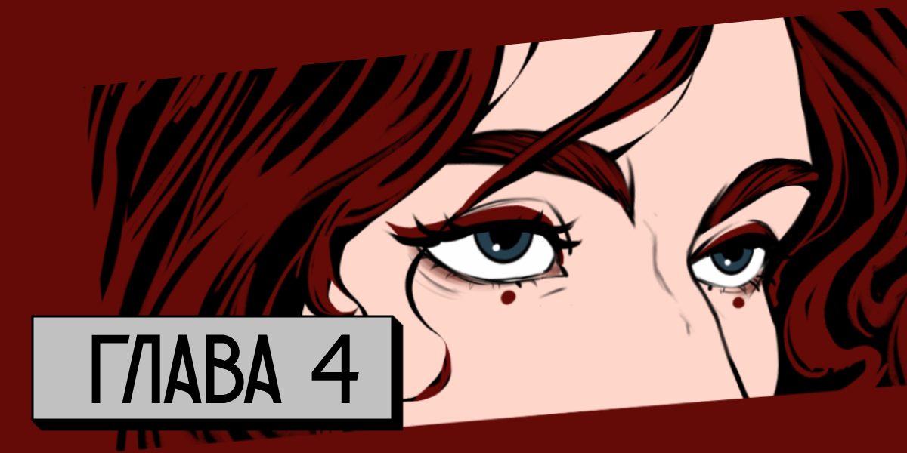

08.06.2026
— Впереди Сережа, — слышу я сквозь сон голос Оли.
— Просто задави его, — говорю я. Глаза открывать не хочется, палящее солнце я чувствую даже так.
— Настя! — но я слышу больше смеха, чем осуждения в ее голосе. — Ты наконец поспала, не хотели тебя будить. А Сережа — это жд станция впереди.
— Значит, его там уже переехал кто-то до нас, — потягиваюсь я насколько это возможно.
Как только остатки сна начинают отступать, в голове вспыхивает "рюкзак".
Смотрю в ноги: вот он, тут. Никто на него не покушался.
Мысленно выдыхаю и перевожу взгляд в окно. За окном все те же поля. Поля-поля-поля. Есть ощущение, что мы умерли и попали в какой-то полевой ад. Жара тут, кстати, соответствующая.
Позволяю себе еще на пару секунд прикрыть глаза, которые так устали от яркого света, что болят не переставая. Свои любимые прадовские очки я потеряла еще в Сколково и с тех пор мучаюсь. Скорее всего в рюкзаке осталась пачка или две патчей, но сейчас их доставать боюсь. Конечно, на меня никто не набросится и не отнимет. Просто переживаю, что кто-то ненароком увидит содержимое моего рюкзака. А переживать есть за что.
Даже против своей воли мысленно переношусь на 4 дня назад.
В ночь, которую я называю началом конца.
Если кому и было весело по пути до Москвы, то мне. Было легкое ощущение, что я попала в какую-нибудь антиутопию, которыми зачитывалась все время. Пожалуй, больше всего напоминало "Пятую волну". Даже когда мы стояли в толпе таких же несчастных, я чувствовала себя в безопасности. Вокруг была куча военных с оружием, нам обещали еду и списки на вход. Кажется, я с кем-то даже пыталась флиртовать. Да, точно. Обменяться парой легких улыбок с молоденькими парнями в форме, кому-то подмигнуть — это же не преступление.
А потом внезапный голос "Без паники", который, вы не поверите, именно эту панику и провоцирует, блядь. Следом нас подхватило и понесло людское море. Уже было не до улыбок. Мне хотелось просто убить каждого, кто на меня налетел или толкнул. Я знала, что завтра все тело будет покрыто синяками — настолько чувствительная была моя светлая кожа.
Когда я в очередной раз повернулась, чтобы наорать на кого-то, то поняла, что рядом нет девиц. К этому моменту моя дыхалка уже отказывала и все, чего мне хотелось, чтобы сердце не остановилось вот прямо сейчас. Пожалуйста, можно я умру не в таких условиях? Я не хочу лежать грязным поломанным трупом посреди таких же тел, которые мечтали о душе последние три дня. Желтые круги света от высоких фонарей выхватывали из темноты измученные лица, но тут же отступали.
Я. Так. Не. Хочу.
Поэтому я решаю бежать. Возможно, в сторону машины, возможно, нет. Толпа подхватила меня так же легко, как и отпустила. В какой-то момент я наступила на что-то мягкое и всю силу воли пустила на то, чтобы не смотреть вниз, потому что знаю, что там увижу. Кого там увижу.
Меня оглушила автоматная очередь. В эту секунду я поняла две вещи: стреляют совсем рядом и стреляют по толпе, не в воздух. Я не различала, что кричат, но кричат очень громко. Разум отошел на задний план и уступил место инстинктам. Одному инстинкту — выжить. Я таранила все и всех, не оглядывалась на крики детей и мне было плевать, что сейчас у меня под ногами. Очевидно, я была такая не одна, потому что в какой-то момент меня сильно толкнули я упала. Больно ударилась коленом и, кажется, стесала руки. Но все равно как можно быстрее пыталась перекатиться в сторону от толпы — иначе затопчут. А я все-таки решила умереть не сегодня. Глубокий вдох и встаю. Слишком резко, в глазах потемнело — все-таки давно не 17. Попыталась сфокусировать взгляд хоть на чем-то и у меня получилось.


Вытаскиваю себя из этого омута памяти и возвращаюсь в машину к девицам. Впереди виднеются первые домики — деревянные. Это неплохой знак, сюда зараженные вряд ли уже добрались. Кстати о знаках: Оля проезжает табличку с надписью "Чернуха" и заговорчески смотрит на меня. Я киваю. Если мы в аду, то чернухи нам явно не избежать.
— Слева Пятерочка! — говорю я Оле, но она уже и сама наверняка видит.
Не знаю как так вышло, но Пятерочки сопровождают нас всю дорогу. Но оно и неплохо — принимают любые способы оплаты, товар более-менее приличный. А Пятерочки в таких селах вообще чудо: много что есть на полках, ведь у всех свои огороды, зачем покупать "химию всякую"?
Заезжаем на парковку, но не спешим выходить. Первое правило апокалипсиса: осмотрись, потом уже действуй. Хотя нет, это второе. Первое — не доверяй никому. Стоп, а не так Кэсси в то самой "Пятой волне" говорила? Надо было дочитать серию, узнала бы насколько помогло это ей.
Разворачиваюсь вполоборота и смотрю на Тору. Оля продолжает смотреть по сторонам в надежде увидеть кого-то из местных. Долго ждать не нужно: из магазина выходит семейная пара. Слышу тихий облегченный выдох. Возможно, мой.
— Итак, как разделимся? — спрашиваю я девиц.
— Мы с Торой идем к бакалее, я на крупах, она на консервах, — серьезно смотрит на меня Оля.
— Я еще за чипсами забегу, все равно ничего тяжелого после консервов рюкзак уже не выдержит, — подхватывает Тора.
— Сладкое?
— Даже не думай, прошлое печенье было ужасное, в этот раз я сама!
— Ну сама, так сама! Я что бессмертная, чтобы с водителем спорить? — хотя лично я считаю, что печенье было ничего, не вся же еда должна быть покрыта шоколадом. — Тогда на мне опять химия и гигиена?
Девицы синхронно кивают.
Выходим из машины мы так же синхронно. Супергеройской музыки только не хватает, как в кино.
Первой следовало бы пустить Тору, она улыбается приветливее всех. Но в этот раз я была раньше у дверей, поэтому придется посетителям лицезреть сначала меня.
Я вечно теряюсь в новых магазинах. Этакая легкая паника из детства, когда мама оставила тебя одну в очереди и отошла, а очередь все подходит и подходит. Вот примерно тоже чувство охватывает и меня — чувство потерянности. Но нужно собрать яйца в кулак, потому что сейчас помощи можно ждать только от самих себя.
Вполне себе обычная Пятерочка, только полки полупустые. Хотя сейчас все магазины такие, радует, что вообще хоть что-то осталось. Спешно прохожу мимо фруктово-овощного отдела, но в последний момент хватаю с полки пару последних пачек миндаля. Сразу сворачиваю налево — обычно вся химия именно там. Но сегодня меня встречает вино-водочный. Точнее, бывший вино-водочный, а сейчас просто пустые полки. Спорим, что первой люди вынесли всю водку? Какой бы пиздец не творился в стране, люди пить не перестанут. Через пару шагов накатывает характерный запах химозы.
Знаете, как заставить девушку во время апокалипсиса на минутку почувствовать себя счастливой? Увидеть, что на полке остались тампоны твоей марки. И даже плевать на капельки. Нет, правда! Теперь я хватаю любые и побольше. Теперь нет той роскоши, когда ты можешь каждые 3 часа зайти в туалет и поменять тампон. Теперь мы едем по шесть часов без остановок или прячемся от неадекватов. Не скажешь же: "Уважаемый долбоящер, не нападайте на меня, обождите буквально пять минут, мне нужно поменять тампон". Про девиц я тоже не забываю, поэтому беру прокладки. Всех по чуть-чуть. Уж убейте, но вообще не вижу разницы, какими пользоваться. Это же не тампон, который может мешать внутри.
Попытать счастье со средствами для стирки? Я давно поняла, что меня разбаловала послековидная жизнь со всевозможными доставками, уж и забыла, что в обычных магазинах выбора для моей чувствительной кожи нет никакого. Этот оранжевый не вымывается, от этого детского ужасная чесотка, капсулами сейчас вообще не постираешь. Кстати, знаете почему на картинках про апокалипсис люди всегда грязные и в рванье? Не для создания атмосферы, а потому что постирать в новом мире практически нереально. Нет, конечно, если ты остался в одном из закрытых городов, то твоя жизнь вряд ли изменилась. Мы же, те, кто остался за стеной, на этой адской жаре потеем в считанные минуты, покрываемся пылью и не можем нормально сходить в душ. И тут мой взгляд падает на самую нижнюю полку, где лежит сокровище — китайское чудо-мыло. Не идеальный вариант, но лучше чесоточного порошка. Последние четыре куска отправляются в мою корзину.
Пока рука тянется за шампунем, краем глаза я замечаю движение.
Это не зараженные, слишком тихо в магазине для нападения. И не девицы, они знают, что ко мне лучше не подкрадываться. Обычный мужичок, наверняка местный.
— А что тут красна девица делает?
— В магазине? Не поверите, но за покупками пришла, — сарказм так и сочится в моем голосе.
— В такую даль за покупками приехала?
— Так я местная, племянница тети Маши, — вру я даже не моргнув.
— Маньки что ли? Так ты тогда почти родная! Стольничка не найдется для своего?
— Пить вредно. Да и в продаже нет ничего.
— Так это просто надо знать, где есть. Для души оно знаешь как полезно!
С другого конца стеллажа вынырнула Оля, чем явно смутила новообретенного родственничка.
— Ты тут как?